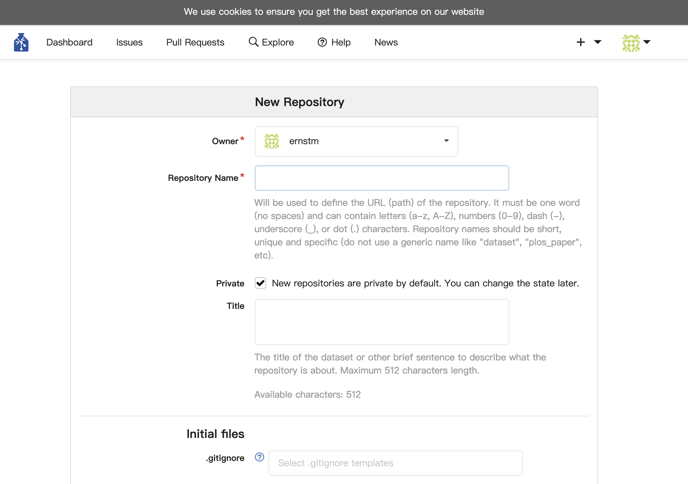
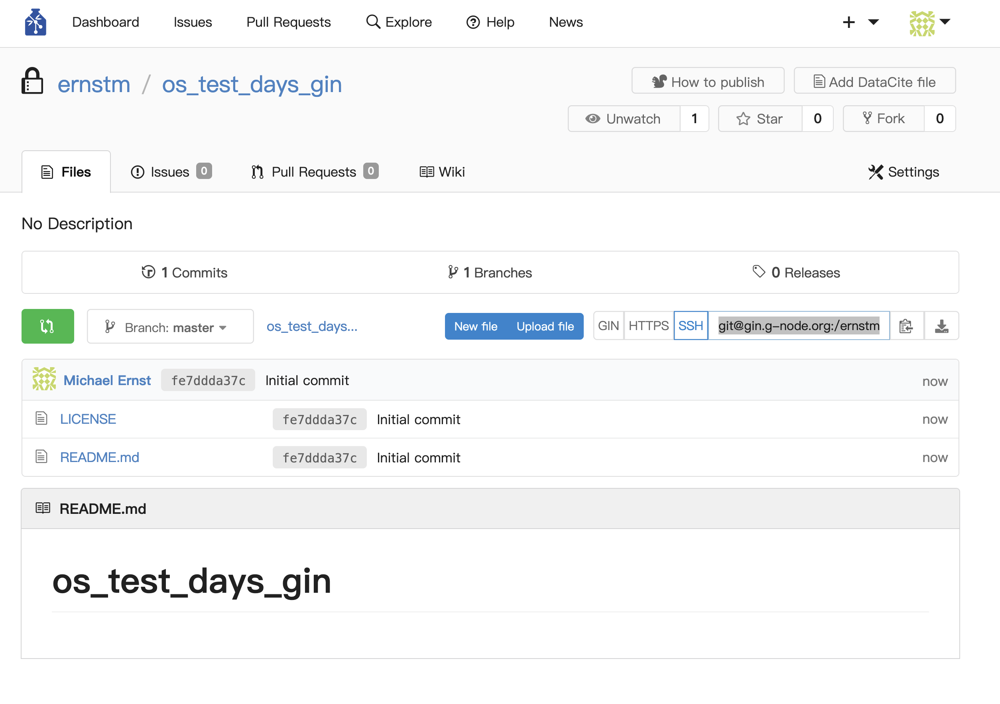

G-Node/GIN#
BIDS gives us a starting point for standardizing neuroscience data, but this alone does not ensure acessability or reproducibility. We need tools that go beyond mere standards.
Intro: The Problem at Hand#
Neuroscience is one of the most interdisciplinary fields of research, encompassing various domains
— cognitive science, neuroimaging, electrophysiology, computational modeling, and more.
Each discipline brings unique methodologies, data modalities, and storage needs. This diversity often leads to siloed practices, making collaboration and data reuse unnecisarrly difficult.
Compounding the issue is the variety of standards — when they exist— and the proprietary formats imposed by commercial tools. Let’s be clear we can not simply rely on social contracts, i.e. self inforcement practices.
Social contracts, like the voluntary adoption of the BIDS standard, help align practices within labs or collaborations but fall short of addressing larger, systemic problems.
To bridge gaps between disciplines or even between labs using different conventions, we need robust technical solutions that embed reproducibility, accessibility, and scalability into data management workflows.
G-Node or the “German German Neuroinformatics Node (G-Node)” provides their own take on this issue:
The G-Node Approach#
G-Node, or the German Neuroinformatics Node, addresses the systemic challenges in neuroscience data management by providing an ecosystem where data and tools are open, interoperable, and scalable, rather than proprietary, fragemented and dependence forming standards.
Their solutions are backed by support from:
The German Federal Ministry of Education and Research
Ludwig-Maximilians-Universität München
The International Neuroinformatics Coordination Facility (INCF)
Motivation#
We care, beacuse they provide tools for:
data access, data storage, and data analysis
We’ll be taking a look at one of their solutions, the G-Node Interface:
G-Node Interface is a data hosting and sharing plattform, build on git and git-annex infrastructure. Meaning that version control and efficient data management are at the heart of the plattform.
Spotlight on the GIN Platform#
One of G-Node’s flagship tools is the GIN (G-Node Infrastructure) platform. GIN is a open-source web-based plattform to host and share data, with server solutions compatible with the GDPR. Unlike traditional cloud storage or proprietary solutions, GIN integrates provenance and transparency directly into its workflows. GIN builds on Git and Git-Annex for these purposes.
Feels familiar? Excursion GitHub#
While now in the hands of mircrosoft GitHub is and probably will forever be the standard for open and reprodcuible sharing of code and applications.
Question: GIN is based on the same architecture, but is tailored to a different use-case: What could be the difference?
Same version control system (Git; version tracking, multiple branch solutions etc.), but tailored towards efficient Management and version control for larger data-heavy projects (Git-Annex). The max. file size for GitHub is 5mb per file via the web-client. and up to 100mb via the command line. Larger projects can make use of Git LFS (Git Large File Storage) using pointer files in your actual repository that point towards the actual files stored in their server system.
GIN: The manual way#
Let’s have a quick look at how one can make use of this platform:
Simply:
1. Create a Repository:#
After creating an account, users can set up a repository to host their data.

2. Add and Upload Files:#
Files can be uploaded through the web interface, but with some restrictions:
Maximum file size: 10 GB
Maximum files per upload: 100 files
3. Create a repository#
Share the files or use the Repository as private data storage
Challenges#
While straightforward, this approach has some significant downsides: Slow Upload Speeds: For larger datasets, the upload process can be painfully slow. Limited Scalability: Working within the file size and number constraints quickly becomes cumbersome. Data Provenance?
GIN Cli#
The platform also provides tools for more advanced interaction, allowing for faster and automated data-transfer. The Gin Command-Line Interface (GIN CLI): The GIN CLI extends the platform’s capabilities beyond the web interface. It allows users to efficiently manage repositories, sync data, and track changes using Git and Git-Annex under the hood. You’ll find a simple tutorial here: https://gin.g-node.org/G-Node/Info/wiki/GIN+CLI+Usage+Tutorial
In essence it’s a very simple approach:
create a GIN repository via the web-client and a local mirror
initalize your local repository
add data to your local repository
upload your data to the associated repository via the CLI using the command:
gin upload --options
DataLad#
In life, some things are required by funding agencies, some are nice to have, and then there are those things that, once discovered, make your life (and neuroscience) significantly better. You could say this about data sharing in general, but DataLad exemplifies this perfectly.
One efficient and reproducible way to work across multiple platforms is through the DataLad library. It focuses on true data provenance by providing an interface to integrate data repositories, local version control, and automatic metadata creation on the fly, e.g.
- Recording the origin of datasets, including where and when they were created or obtained
- Tracking transformations, such as scripts applied, parameters used, and the sequence of analysis steps
- Storing and adding to metadata that identifies contributors and captures the context of data modifications
Question: WTF is Data Provenance?
Data provenance refers to the comprehensive documentation of the origins, transformations, and journey of data throughout its lifecycle. It ensures that every step in data processing is transparently recorded, enabling both researchers and external parties to verify and reproduce results.
Building on this idea, DataLad is best suited for keeping track of data, facilitating sharing, and introducing reproducibility to workflows. For instance, it ensures that associated scripts, data transformations, and workflows are easy to track and re-run—particularly useful for preprocessing tasks (ever tried doing that for someone else’s dataset?).
The main features:
command-line tool build on Python
Integrated Git and Git-annex
Completely domain-agnostic (so not neuroscience specific)
available for all major operating systems (Linux, macOS/OSX, Windows)
Allows:
version-controlling arbitrarily large content,
easily sharing and obtaining data (not data hosting),
(computationally) reproducible data analysis,
Question: YODA Principles?
The YODA principles provide a clear framework for organizing datasets to ensure reproducibility, transparency, and modularity in data analysis projects. “YODA” stands for YODAs Organigram on Data Analysis, emphasizing recursive structure and best practices for managing data and analysis. These principles address common issues in data analysis, such as chaotic directory structures, lack of version control, and reproducibility challenges due to environment or tool changes.
The Three YODA Principles:
Part 1: One thing, one dataset
Modular organization: Separate raw data, preprocessed data, analysis code, and results into dedicated directories.
Nested subdatasets: Use subdatasets for reusable components (e.g., raw datasets, analysis scripts).
Keep input data untouched during analysis.
Create separate projects for different analyses to avoid conflation.
Part 2: Record where you got it from, and where it is now
Track the provenance of all data and components, including sources and dependencies.
- Use tools like datalad clone and datalad download-url to record sources and link data.
- Use relative paths for data references in scripts to ensure portability across systems.
- Ensure datasets are clean, modular, and shareable for collaboration or publication.
Part 3: Record what you did to it, and with what
- Capture the provenance of transformations and analyses performed on the data.
- Use datalad run to track inputs, outputs, commands, authorship, and execution timestamps.
- For full reproducibility, use datalad containers-run to include the computational environment in the dataset.
Setup#
Before we get started, we will need a few things to seamlessly manage our data. We need:
git
a GIN account
a working terminal
Follow the installation tutorial in the Setup section of this book for your specific system. Be advised that for windows sers to make full use of Datalad’s command line abilities the installation of Windows Subystems for Linux should be installed.
Next we want to open a terminal and run the following code to install datalad and datalad-container, a handy extension, in a newly created environment called simply “datalad”
But before we copy and paste the following code block into your terminal, let’s look at what it actually does
python -m venv --system-site-packages ~/env/dataladcreates a virtual environment in the directory ~/env/datalad and ensures access to globally installed Python packages
source ~/env/datalad/bin/activateactivates the virtual environment you just created, isolating your terminal session for your Datalad-related work from your baseline environment
python -m pip install dataladnow installs the datalad package into your isolated virtual environment using the Python package manager, pip.
python -m pip install datalad-containersame thing, just for the datalad-container extension, which allows you to manage and run automated pipelines (Docker or singularity container) on your data
python -m venv –system-site-packages ~/env/datalad && source ~/env/datalad/bin/activate; python -m pip install datalad python -m pip install datalad-container
Note: From now on, whenever you want to work with Datalad, activate the virtual environment in your terminal with:
source ~/env/datalad/bin/activate
Usage/How to get started:#
Read the DataLad handbook (like seriously). The Handbook provides a story driven, interactive crash-course concerning every possible aspect that your data management workflow could run into.
From here on out, most of what we will go through is explained (probably better) and in more detail in the handbook, so please reference the chapters addded at the end of each section if you want to know more:
We’ll start by jumping into the command line and by showing you the most basic commands that you commonly use to create a local git repository
You’ll encounter the following bash commands:
cd <folder> (change directory to another folde)
ls -options (list the contents of a directory)
mkdir (make/create a directory/folder)
cat [OPTIONS] [FILE_NAMES] (create or concatenate a file/files)
cp -filename directory/ (copy a file)
du -options (summarize disk usage)
We’ll also be using the tree libary to visualize the contents of a directory (pip install tree)
- tree -d
tree
└── home
└── me
└── awesome_datalad_project
├── aligned
├── code
└── sub-01
└── bold3T
├── ...
└── sub-xx
└── bold3T
See aslo the handbook section on bash
A normal workflow on the command line therefore may look something like this
1. create a directory#
$ mkdir os_days_2024_test
$ cd os_days_2024
2. initialize git/make it a git repository#
$ git init .
Initialized empty Git repository in /Users/me/phd/projects/git/os_days_2024_test/.git/
3. check for changes#
$ ls -lah
total 0
drwxr-xr-x 3 me staff 96B Nov 27 18:40 .
drwxr-xr-x 42 me staff 1.3K Nov 27 18:39 ..
drwxr-xr-x 9 me staff 288B Nov 27 18:40 .git
4. Check what git is tracking#
$ git status
On branch main
No commits yet
5. create/add a file (cat << EOT >> notes.txt appends multiple lines of text, specified between EOT delimiters, to the file notes.txt)#
$ cat << EOT >> notes.txt
The command "datalad save [-m] PATH" saves the file (modifications) to
history.
Note to self: Always use informative, concise commit messages.
EOT
6. track changes#
$ git add notes.txt
$ git status
On branch main
No commits yet
Changes to be committed:
(use "git rm --cached <file>..." to unstage)
new file: notes.txt
7. And checking the staus of our git directory again#
$ git status
On branch main
nothing to commit, working tree clean
Not very informative, huh? But now we commited a file, we can check which logs git keeps
9. check the git log files#
$ git log --oneline
75a46e4 (HEAD -> main) added notes
Let’s look at how datalad does this#
Datalad create#
The datalad create statement automatically sets up a basic directory structure. The snytax is as following:
datalad create -c PROC NAME
In the command line this may look something like this:
$ datalad create -c text2git os_days_demo
The -c flag provides info on the configuration, with which the directory is created. More on that later, here we simpyl chose text2git. Any Idea what this might possibly do? Let’s have a look at the directory.
$ cd os_days_demo
The ls -la command lists all the content in a given directory, e.g.
ls -la
total 8
drwxr-xr-x 5 me staff 160 Nov 25 19:08 .
drwxr-xr-x 32 me staff 1024 Nov 25 19:08 ..
drwxr-xr-x 4 me staff 128 Nov 25 19:08 .datalad
drwxr-xr-x 14 me staff 448 Nov 25 19:08 .git
-rw-r--r-- 1 me staff 115 Nov 25 19:08 .gitattributes
Question: What does the dot before the filenames possible mean?
These are hidden files, running the ls command without the a-flag will reveal that our directory appears still empty.
We see that datalad create has provided us with an empty directory, but gives us a few machine-readable congfiguratio files:
.datalad: metadata and configuration directory for DataLad-specific settings and state management.
.git: Git repository metadata directory for version control. (as we've seen with git init)
.gitattributes: configuration file specifying rules for tracking files (e.g., text with Git, large files with Git-Annex).
We can have a look at these with e.g. the `nano` cli-editor:
nano .gitattributes
.gitattributes files
These are hidden files, specifying what git and Git-Annex respectively are supposed to track. Here Git-Annex tracks binary files larger than 0 bytes while excluding files in .git directories. In detail:
annex.backend=MD5E
Specifies the hash backend for file storage in Git-Annex.
Uses MD5E hash (MD5 with file extension) for identifying files.
**/.git* annex.largefiles=nothing
Excludes .git files from being handled by Git-Annex.
Ensures .git files remain under Git's regular version control.
annex.largefiles=((mimeencoding=binary)and(largerthan=0))
Defines criteria for files handled by Git-Annex.
Targets files with binary mime encoding.
Includes files larger than 0 bytes.
Datalad save#
Now we’ve set up the basic directory strtucture and specfiied which files are supposed to be tracked. How do we actually track our changes thoug? Compared to the Git approach above this is simpler, as DataLad does most of the work for us. Let’s create another notes.txt file.
cat << EOT >> notes.txt
> The command "datalad save [-m] PATH" saves the file (modifications) to
> history.
> Note to self: Always use informative, concise commit messages.
>
> EOT
Datlad status#
Let’s look at the status of our dataset, i.e. what has changed?
$ datalad status
untracked: notes.txt (file)
So there seem to be some untrack changes, let’s add and commit, just like in git, yes?
The datalad save command combines a git add and a git commit , and therefore, the commit message is specified with datalad save.
datalad save -m "added notes.txt"
And let’s look at the staus again $ datalad status nothing to save, working tree clean
Not very formative, but what we would also expect from the git status command. If we want to see the actual changes we can make use of Git, as every datalad dataset is also a git directory:
$ git log --oneline
df63d9c (HEAD -> main) added notes.txt
6d7160c [DATALAD] new dataset
Summary - Local version control#
datalad create: creates an empty dataset. Configurations (-c yoda, -c text2git) are useful.A dataset has a history to track files and their modifications. Explore it with Git (git log) or external tools (e.g., tig).
datalad saverecords the dataset or file state to the history. Concise commit messages should summarize the change for future you and others.datalad statusreports the current state of the dataset. A clean dataset status is good practice.
Datlad install/Datalad clone#
To aquire a dataset from the internet we have multiple options, e.g. via the datalad clone command.
This not only allows for faster downloads, but additionally creates necessary metadata. We’re avoiding, e.g. “I don’t really remember where I got the data from; Yeah, whatever version should be fine. Oh they updated the dataset since 2008?” etc.:
```
$ datalad clone --dataset https://github.com/psychoinformatics-de/studyforrest-data-phase2.git
install(ok): example-dicom-functional (dataset)
add(ok): example-dicom-functional (dataset)
add(ok): .gitmodules (file)
save(ok): . (dataset)
add(ok): .gitmodules (file)
save(ok): . (dataset)
action summary:
add (ok: 3)
install (ok: 1)
save (ok: 2)
```{admonition} Dataset Nesting - the --dataset flag
:class: dropdown
The `--dataset` flag indicated that we want to creat a nested dataset into our already existing Dataset. This `Superdataset`, contains the information that a subdataset exists though – the subdataset is registered in the superdataset. Why do you think this could be useful? More info on nesting in the [Datalad Handbook](https://handbook.datalad.org/en/latest/basics/101-106-nesting.html)
Let’s take a look at our newly aquired dataset. The directory structure seems familiar, check with tree
- tree -d
.
├── code
│ ├── rawdata_conversion
│ └── stimulus
│ ├── movie
│ ├── movie_localizer
│ │ └── videos
│ ├── retinotopic_mapping
│ │ ├── songs
│ │ └── videos
│ └── visualarea_localizer
│ └── img
│ └── lcm
├── src
│ └── lab-eyetracking
├── stimuli
│ ├── movie_localizer -> ../code/stimulus/movie_localizer/videos/
│ ├── retinotopic_mapping -> ../code/stimulus/retinotopic_mapping/videos
│ └── visualarea_localizer -> ../code/stimulus/visualarea_localizer/img/
├── sub-01
│ ├── ses-localizer
│ │ └── func
│ └── ses-movie
│ └── func
Let’s look into this more, we’ll use cd to look at some of our subject data.
cd sub-01/ses-localizer/func/
ls
sub-01_ses-localizer_task-movielocalizer_run-1_bold.json
sub-01_ses-localizer_task-movielocalizer_run-1_bold.nii.gz
...
So whats a nii.gz file? How big do you expext those to be?
Let’s inspect closer. We will print the size of the directory and the contained files in human readable form, using the bash du (disk usage) command.
du -sh
B .
The file size seems suspicious. Thinking back, why was the download of the dataset this quick?
Git Annex#
Fig. 1 Git-Annex#
Git-Annex and by extension Datalad by deault indexes large files, but doesn’t necessarily download them, so these files are not actually present. The present symbolic links or Simlinks only point to where a file lies. Git-annex allows us to store the relevnat structure of a dataset and only retrieve whatever we need, when we need it. Why could this be of use to neuroscientists?
Git-Annex - Definition
git-annex allows managing large files with git, without storing the file contents in git. It can sync, backup, and archive your data, offline and online. Checksums and encryption keep your data safe and secure. Bring the power and distributed nature of git to bear on your large files with git-annex.
Datalad get - Retrieving data#
To actually download or retrieve files we will use the datalad get command specifying the excat file we want:
datalad get sub-01/ses-localizer/func/sub-01_ses-localizer_task-objectcategories_run-*.nii.gz
get(ok): sub-01/ses-localizer/func/sub-01_ses-localizer_task-objectcategories_run-2_bold.nii.gz (file) [from mddatasrc...]
get(ok): sub-01/ses-localizer/func/sub-01_ses-localizer_task-objectcategories_run-4_bold.nii.gz (file) [from mddatasrc...]
get(ok): sub-01/ses-localizer/func/sub-01_ses-localizer_task-objectcategories_run-3_bold.nii.gz (file) [from mddatasrc...]
get(ok): sub-01/ses-localizer/func/sub-01_ses-localizer_task-objectcategories_run-4_defacemask.nii.gz (file) [from mddatasrc...]
get(ok): sub-01/ses-localizer/func/sub-01_ses-localizer_task-objectcategories_run-3_defacemask.nii.gz (file) [from mddatasrc...]
get(ok): sub-01/ses-localizer/func/sub-01_ses-localizer_task-objectcategories_run-2_defacemask.nii.gz (file) [from mddatasrc...]
get(ok): sub-01/ses-localizer/func/sub-01_ses-localizer_task-objectcategories_run-1_bold.nii.gz (file) [from mddatasrc...]
get(ok): sub-01/ses-localizer/func/sub-01_ses-localizer_task-objectcategories_run-1_defacemask.nii.gz (file) [from mddatasrc...]
action summary:
get (ok: 8)
As we can see, Datalad now uses the existing structure to download the data we’ve queried. But it looks like only the nifti (nii.gz) files were downloaded. What about the .json files we saw before?
To get all files associated with the dataset recursively. We can run datalad get -r. But think closely before running this, what is the expected behabivor? What happens when we are dealing with massive datasets?
Question: How do we check the filesize again?
du -sh
Datlad drop - Removing data#
In the same vein, you might want to remove raw data that has already been processed. This can be done via the datalad drop command.
datalad drop sub-01/ses-localizer/func/sub-01_ses-localizer_task-objectcategories_run-4_bold.nii.gz
drop(ok): sub-01/ses-localizer/func/sub-01_ses-localizer_task-objectcategories_run-4_bold.nii.gz (file)
what about the size of our directory now?
du -sh
Datalad Run: Reproducible execution#

Fig. 2 DataLad Run - reproducbile execution inclduing metafile generation#
Now we could start working with this directory. Given that we want datalad to provide us with our metadata on what was done to our data, by whome, given which script etc. we can make use of the datalad run command. This makes use of the native Python integration and let´s us run python scripts on our data directories. We will deomstrate this shortly, but let’s get some actual data first.
Summary - Dataset consumption#
datalad clone installs a dataset. It can be installed “on its own”: Specify the source (url, path, …) of the dataset, and an optional path for it to be installed to.
Only small files and metadata about file availability are present locally after an install. To retrieve actual file content of larger files, datalad get downloads large file content on demand.
Content can be dropped to save disk space with datalad drop. Do this only if content can be easily reobtained.
Datasets preserve their history. In nested datasets, the superdataset records only the version state of the subdataset.
Using published datasets#
Most of the next part is taken from the Datalad Yale Demo. Head over there to see their more in-depth takes.
Let’s first set up a new dataset directory.
cd ../
datalad create -c yoda myanalysis
A new configuration procedure appears. Yoda?
Question: What’s the YODA Flag in the datalad create Command?
The -c yoda flag in the datalad create command applies YODA-compliant configurations to a newly created dataset. These configurations provide a head start in organizing a dataset according to the YODA principles. What the YODA Flag Does:
Directories/files:
- modular structure; directories for code and documentation
- placeholders; e.g. README.md and CHANGELOG.md (human-readable metadata)
Version Control (.gitattributes)
- tracks all code in the code/ directory and all small text files with Git (not Git-Annex)
- tracks all other files, i.e. larger data points to be with Git-Annex, not Git
1. Pull Data from GIN#
We’ll be using the datlad clone command to retrieve a datasat from a public GIN repository.
cd myanalysis
datalad clone -d . \
https://gin.g-node.org/adswa/bids-data \
input
We can further use prexisting scripts, e.g. blatantly steal from the nilearn tutorial, as they stored theri stuff on Github. We’ll also add a commit message, so that we have some idea on what were doing for our metadata.
Here we’ll see another of DataLads features. We can simply download web-content via the download-url command, and most importantly. This will further create metadata on when, where and who downloaded the data.
datalad download-url -m "Download code for brain masking from Github" \
-O code/get_brainmask.py \
https://raw.githubusercontent.com/datalad-handbook/resources/master/get_brainmask.py
2. Build the computational environemnt, e.g. get a container#
Oh damn, but we don’t have the necessary software installed for this analysis, surely? And what if the script was written for a specific Linux distribution? That’s were Datalad containers can come in handy. We need a container with a Python 3 environment and the nilearn package already preinstalled installed.
This container does not need to contain the analysis script. It just needs the correct software specifications our downloaded script requires – here a Python 3 environment with nilearn.
Let’s add this container to our available ennvironments using datalad containers-add.
#
datalad containers-add nilearn \
--url dhub://djarecka/nilearn:yale
yale: Pulling from djarecka/nilearn
Digest: sha256:8b7592db7c29f449aae918cc7af2000771071084c861db63013099812e87a5bf
Status: Image is up to date for djarecka/nilearn:yale
docker.io/djarecka/nilearn:yale
What's Next?
View a summary of image vulnerabilities and recommendations → docker scout quickview djarecka/nilearn:yale
3. Run the analysis#
Simply, call datalad containers-run to execute the script inside of the container. Here’s how this looks like
datalad containers-run -m "Compute brain mask" \
-n nilearn \
--input input/sub-02/func/sub-02_task-oneback_run-01_bold.nii.gz \
--output figures/ \
--output "sub-02*" \
"python code/get_brainmask.py"
Let’s break this command down, we call datalad containers-run, defining our nilearn container, specifying input and output, as well as our executable python to run our previously downloaded script.
-n nilearn:
Specifies the nilearn container for running the computation, pre-configured for neuroimaging tasks.
--input input/sub-02/func/sub-02_task-oneback_run-01_bold.nii.gz:
Uses a BOLD fMRI image (NIfTI format) as input, tracked and reproducible by datalad.
--output figures/:
Outputs results (e.g., visualizations) to the figures/ directory.
--output "sub-02*":
Tracks additional outputs matching the sub-02* pattern.
"python code/get_brainmask.py":
Runs the Python script to compute a brain mask, isolating brain regions from the input image.
Looking into our figures output folder, we can see that we apparently did do some neuroscience? Yay!
$ ls
CHANGELOG.md README.md code figures input sub-02_brain-mask.nii.gz
$ cd figures/
$ ls
sub-02_brainmask.png sub-02_mean-epi.png
4. Check our metadata#
You can query an individual file and how it came to be using the git log command providing it’s name, e.g.:
$ git log sub-02_brain-mask.nii.gz
commit 3ab58eef122727e392a0ce765bd3c2a19f194a95 (HEAD -> main)
Author: Michael Ernst <m.earnest211@gmail.com>
Date: Thu Nov 28 12:47:50 2024 +0100
[DATALAD RUNCMD] Compute brain mask
=== Do not change lines below ===
{
"chain": [],
"cmd": "/Users/me/env/datalad/bin/python3.13 -m datalad_container.adapters.docker run .datalad/environments/nilearn/image python code/get_brainmask.py",
"dsid": "6d4fed52-fc20-4a0d-9b4c-6bb5d8463192",
"exit": 0,
"extra_inputs": [
".datalad/environments/nilearn/image"
],
"inputs": [
"input/sub-02/func/sub-02_task-oneback_run-01_bold.nii.gz"
],
"outputs": [
"figures/",
"sub-02*"
],
"pwd": "."
}
^^^ Do not change lines above ^^^
Or using datalads own diff command, specyfing the most recent change:
- $ datalad diff -f HEAD~1
added: figures/sub-02_brainmask.png (symlink)
added: figures/sub-02_mean-epi.png (symlink)
added: sub-02_brain-mask.nii.gz (symlink)
And the computation can be automatically be repeated in a reproducible manner, based on the recorded provenance using datalad rerun by using the SHA-1 checksum at the top of the commit message:
datalad rerun 3ab58eef122727e392a0ce765bd3c2a19f194a95
Check the Chapter on Datalad Rerun in the Handbook for more info.
Upload Datasets: Connect GIN and your local system via DataLad#
If we want to upload files from our local system to GIN and make full use of our setup using Datalad and Git to manage our files, we’ll need to connect these services. This can be done by generating and sharing SSH keys between the services. SSH (Secure Shell Protocol) keys are authentication protocols that allow secure login from a local system to remote servers and services. For example, if you’re working on a local server system, you’ve likely already used SSH.
Admittedly, this is a more complex process that we will not have time to cover in detail during the workshop. However, you can refer to the following resources for guidance on generating an SSH key using the terminal and adding it to your GitHub and GIN repositories:
Following this Setup, we can quite easily connect our local and remote repositories, while Datalad keeps track of the metadata for us.

Fig. 3 Datalad connecnts local and remote systems, build on Git and Git-Annex#
1. Create an repository on GIN#
Simply click the + at the top of GIN webpage and select `new repository``
2. Create a local repository using DataLad#
Question: Remember how?
datalad create -c yoda os_test_days_gin
3. Add the remote repository#
Now the two systems will necessarily have to know about each other for this to work, right? We’ll let them know that they are related via the datalad siblings add command. A sibling acts like a remote in Git, allowing you to push or pull data.
First we need to et the specifici SSH url from our remote repository, e.g. git@gin.g-node.org:/ernstm/os_test_days_gin.git

And running the command: \( cd os_test_days_gin \) datalad siblings add -d . –name gin –url git@gin.g-node.org:/ernstm/os_test_days_gin.git
Let’s look at the syntac more closely datalad siblings add:
-d .: Specifies the current dataset as the target. –name gin: Assigns the name gin to the remote. –url: Provides the SSH URL to the remote repository.
And we can check wether this worked and what siblings exist for a dataset
$ datalad siblings
.: gin(-) [git@gin.g-node.org:/ernstm/os_test_days_gin.git (git)]
4. Push your dataset changes to the remote repository#
This command is simply enough, once the two dataset are registered as siblings we simply use datalad push to upload data, using the push --to. flag to tell DataLad our target location, e.g.
–to gin: specifies the sibling to push to. In this case, it’s the sibling named gin that you configured earlier.
$ datalad push --to gin
Checking online our files have indeed been uploaded, but If you inspect the differnt branches at the top of your repo, you should see some new entries, e.g. a Git-Annex branch that has been recently updated
{kind=link}
Datalad-container#

Fig. 4 datalad containers-run allows you to run reproducible workflows with included metadata#
Looking at the official Repronim container on DockerHub, tells us most of the info we need to run the container and conveniently also provides a short datalad workflow to demonstrate their implementation e.g.
As we talked about BIDS, we discussed modality-specific data formats. One such format, originally designed for BIDS, is the raw MRI DICOM format. Usually, we want to transform these into an appropriate format (NIfTI) for further processing. For this, you could use, for example, the ReproIn software container. It is built on HeudiConv, a heuristic conversion tool for DICOM files. Beyond converting DICOMs to NIfTI, it also assists in converting a raw dataset to the BIDS standard and integrates with DataLad to place converted and original data under version control. Additionally, it automatically annotates files with sensitive information (e.g., non-defaced anatomical images, etc.).
Making the Container Available to Datalad#
This can be done in multiple ways:
Datalad install for publicly available repositories containing relevant container images.
Manually adding the container using datalad containers-add and providing a name and an appropriate link to the container (e.g., from DockerHub).
Tip Datalad doesn’t automatically handle the container’s functionality. Ensure you’re familiar with the container in question, including its required run commands, input structure, and other specifics.
For example, to add the HeudiConv container, the command might look something like this:
datalad containers-add heudiconv –url dhub://nipy/heudiconv:latest
Practical example:#
The official Repronim container on DockerHub includes a helpful short DataLad workflow to demonstrate its implementation.
1. Creating the datalad directory
$ datalad create -d ds000003-qc -c text2git
$ cd ds000003-qc
2. using datalad install to pull sourcedate from the internet
ds000003-qc $ datalad install -d . -s https://github.com/ReproNim/ds000003-demo sourcedata
3. using datalad install to download a container image
ds000003-qc $ datalad install -d . ///repronim/containers
4. Verifying our installation
ds000003-qc $ cd containers/
containers $ ls
CITATION.cff LICENSE README.md artwork binds ci images licenses scripts
5. Verifying our data
containers $ cd ../sourcedata/
sourcedata $ tree
.
├── CHANGES
├── README
├── dataset_description.json
├── participants.tsv
├── sub-02
│ ├── anat
│ │ ├── sub-02_T1w.nii.gz -> ../../.git/annex/objects/5g/pJ/MD5E-s5907060--89189d319055e674f76f1524706bac81.nii.gz/MD5E-s5907060--89189d319055e674f76f1524706bac81.nii.gz
│ │ └── sub-02_inplaneT2.nii.gz -> ../../.git/annex/objects/99/p1/MD5E-s682007--f368aa44caf7bd14238963116d04c70e.nii.gz/MD5E-s682007--f368aa44caf7bd14238963116d04c70e.nii.gz
│ └── func
│ ├── sub-02_task-rhymejudgment_bold.nii.gz -> ../../.git/annex/objects/0f/gW/MD5E-s26037942--cb7d19f6eb96bf2b39afdac474a33ed7.nii.gz/MD5E-s26037942--cb7d19f6eb96bf2b39afdac474a33ed7.nii.gz
│ └── sub-02_task-rhymejudgment_events.tsv
├── sub-13
│ ├── anat
│ │ ├── sub-13_T1w.nii.gz -> ../../.git/annex/objects/5f/66/MD5E-s5401073--70943c0c983c78262efbe9c2cdbf6046.nii.gz/MD5E-s5401073--70943c0c983c78262efbe9c2cdbf6046.nii.gz
│ │ └── sub-13_inplaneT2.nii.gz -> ../../.git/annex/objects/m3/6P/MD5E-s641672--297b6451565ce496c6a15d55b0f6c857.nii.gz/MD5E-s641672--297b6451565ce496c6a15d55b0f6c857.nii.gz
│ └── func
│ ├── sub-13_task-rhymejudgment_bold.nii.gz -> ../../.git/annex/objects/24/Qk/MD5E-s24599758--7d779718aa1faa7ff3bfe8f44e8a51c1.nii.gz/MD5E-s24599758--7d779718aa1faa7ff3bfe8f44e8a51c1.nii.gz
│ └── sub-13_task-rhymejudgment_events.tsv
└── task-rhymejudgment_bold.json
7 directories, 13 files
6. And using datalad run to automatically execute the bids-mriqc container (a quality control tool)
ds000003-qc $ datalad containers-run \
> -n containers/bids-mriqc \
> --input sourcedata \
> --output . \
> '{inputs}' '{outputs}' participant group -w workdir
Summary - Using published datasets#
DataLad provides a robust framework for managing published datasets by enabling workflows that integrate data acquisition, containerized processing, and remote repository synchronization. Key capabilities include:
Dataset Installation: The datalad install and datalad clone commands allow users to acquire datasets while preserving their provenance.Sibling Management: Using datalad siblings add, researchers can connect local datasets with remote repositories (e.g., on GIN), enabling seamless synchronization and version control.Containerized Processing: The datalad containers-add and datalad containers-run commands facilitate reproducible data processing using preconfigured software environments.Data Management: Data can be retrieved selectively using datalad get or removed when no longer needed with datalad drop, ensuring efficient storage use.
Additinal Information/Tutorials#
OpenNeuro#
https://handbook.datalad.org/en/latest/_images/openneuro.png
{kind=link}
An alternate solution that is very common of datasets is OpenNeuro.
OpenNeuro is an repository solution to host and share BIDS-compatible datasets, ensuring both accessibility and compliance with community standards. It is designed with the idea of data indexing and searching in mind therefore, but it doesn’t provide the option of non-public datasets.
It is therfore particularly valuable for researchers looking to share data broadly with the community. It ensures reproducibility by providing an accessible, long-term data repository, implementing automatic BIDS Validation, but lacks the version control system unerlying GIN.
Find more info in the Datalad aHandbook section on OpenNeuro